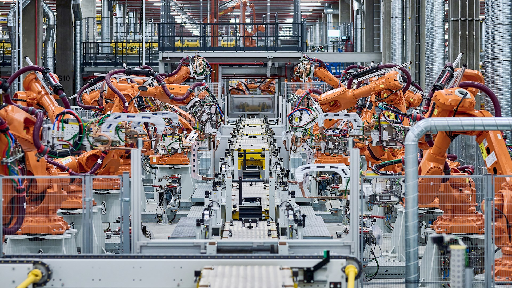

BMW commande plus de 1 700 robots ABB
par O. Héniel · Publié le 12 11 2026

L'exosquellette L'IX BACK VOLTON
BMW commande plus de 1 700 robots ABB pour la production de ses véhicules de nouvelle génération 11 novembre 2026.
ABB Robotics accompagne le groupe BMW dans sa transition vers la mobilité électrique en lui fournissant plus de 1 700 robots de grande taille destinés à la production de sa nouvelle génération de véhicules Neue Klasse.
Ces puissants robots industriels sont déployés dans les ateliers de carrosserie de l'usine principale de BMW à Munich, en Allemagne, ainsi que sur son site de Tiexi, en Chine. Ils y effectueront des tâches exigeantes et répétitives telles que le soudage, le collage, le rivetage et l'assemblage, dans le but d'accroître l'efficacité, la précision et la durabilité de la production.
Comme l'explique Joerg Reger, responsable de la division automobile chez ABB Robotics, cette collaboration avec le groupe BMW témoigne d'une vision commune en faveur d'une production flexible et pérenne. Il souligne par ailleurs que l'association de ces robots puissants et de la plateforme de commande innovante OmniCore permet non seulement d'offrir une précision et une efficacité maximales, mais aussi d'apporter une contribution mesurable aux économies d'énergie et à la numérisation de la fabrication.
La livraison comprend les tout derniers modèles IRB 6720 à IRB 6740 ainsi que l'IRB 7720 d'ABB Robotics, optimisés pour répondre aux exigences de la construction de carrosseries automobiles avec une capacité de charge utile pouvant atteindre 620 kilogrammes.
Au sein de l'usine principale de Munich, ils sont notamment mobilisés pour la fabrication des nouveaux modèles entièrement électriques de la gamme Neue Klasse. L'ensemble des robots utilisés est piloté par la dernière génération de contrôleurs ABB OmniCore, une plateforme d'automatisation intelligente qui offre une vitesse et une précision accrues tout en réduisant la consommation d'énergie.
Enfin, OmniCore prend en charge l'intégration de l'intelligence artificielle, des capteurs ainsi que des technologies cloud et edge, tout en étant équipée d'une technologie écoénergétique de récupération d'énergie. De plus, ABB Robotics réduit considérablement la phase de démarrage grâce à sa plateforme de commande OmniCore et à un système de mise en service innovant.